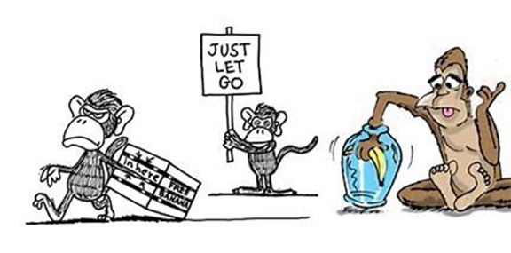
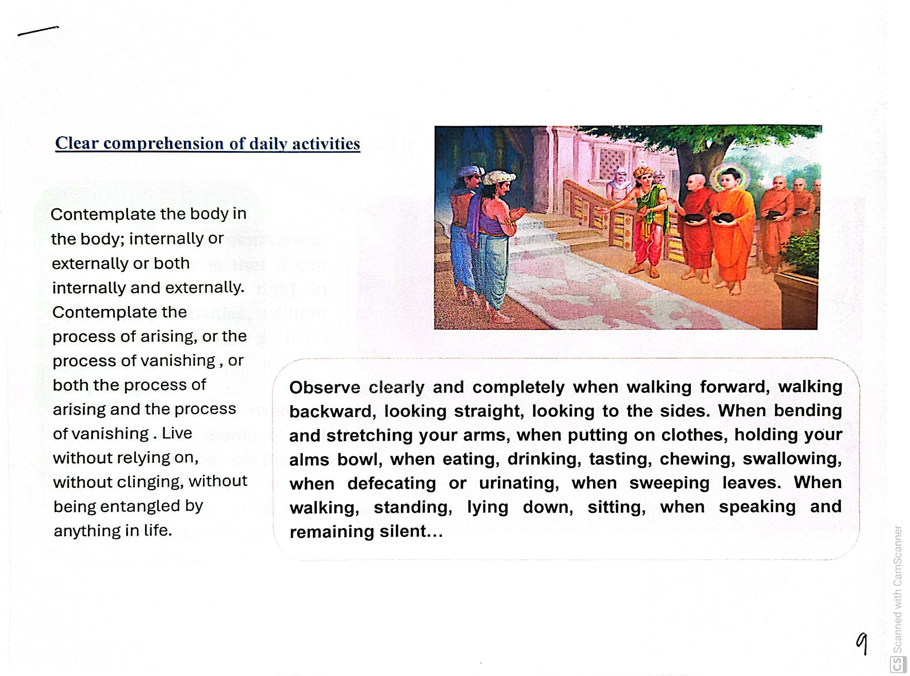
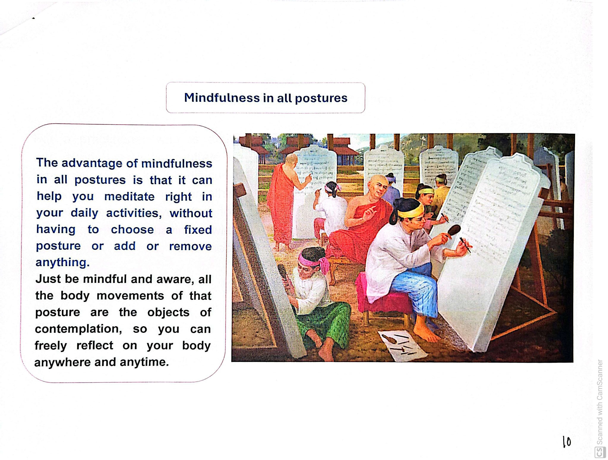
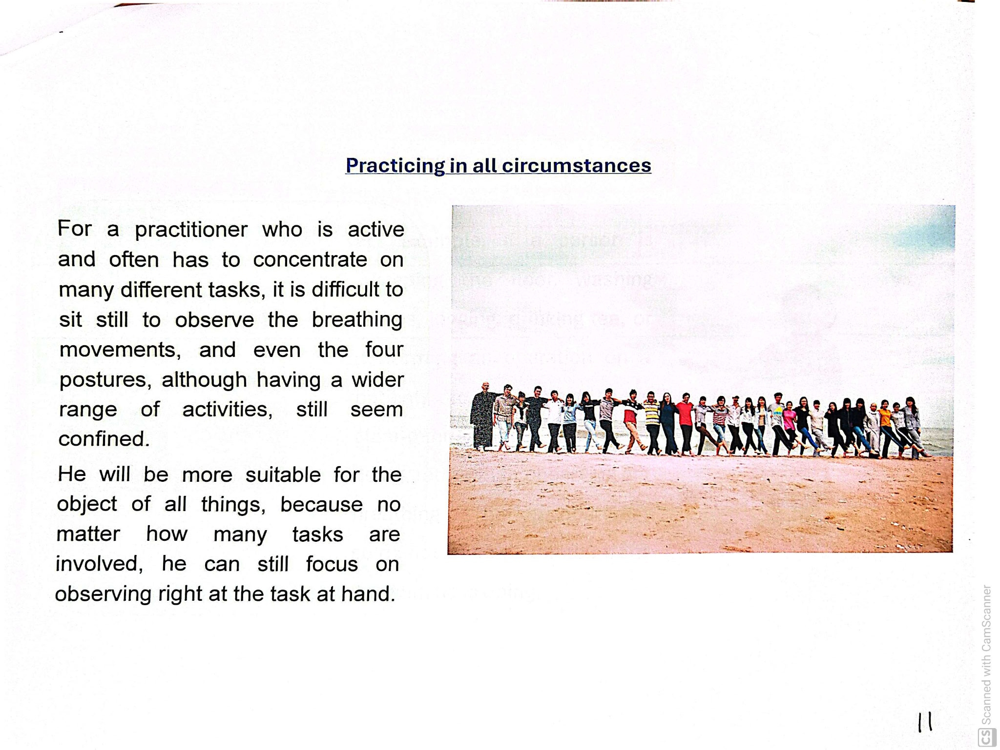
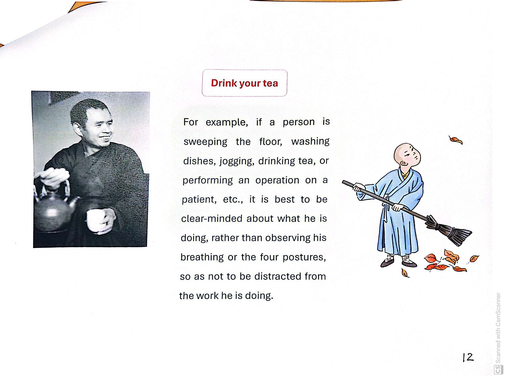

What this lesson is about
This lesson emphasizes mindfulness that stays with the body and activity, not only during formal sitting, but also in ordinary life. The aim is to live without clinging and without being entangled by anything in life.
The “monkey” teaching (summary)
The first scan includes a discourse taught with a “monkey and pitch trap” image: when we wander into the “domain of others” (sense entanglements), we get stuck; when we stay in our “own resort,” there is freedom.

Domain of others
Getting pulled outward into habits of distraction and sense engagement.
Our own resort
Returning to the foundations of mindfulness: body, feelings, mind, and phenomena.
“Move in your own resort… in your own ancestral domain.”
Clear comprehension of daily activities

Contemplate the body in the body; internally or externally, or both. Contemplate the process of arising, the process of vanishing, or both arising and vanishing.
Examples of daily activities to observe
- Walking forward or backward; looking straight; looking to the sides
- Bending and stretching the arms; putting on clothes; holding an alms bowl
- Eating, drinking, tasting, chewing, swallowing
- Using the restroom; sweeping leaves
- Speaking and remaining silent
The point: observe clearly and completely; without relying on or clinging to anything.
Mindfulness in all postures

Posture does not need to be selected or arranged. Whatever the body is doing becomes sufficient.
Awareness simply keeps company with movement, without shaping it, correcting it, or holding it in place.
Because of this, practice is not confined to a cushion or a schedule. It moves freely with the body, available at any moment.
Practicing in all circumstances

For an active practitioner juggling many tasks, sitting still to watch the breath—or even staying only with the four postures— may feel too confined. A wider and more suitable object is: the task at hand.
No matter how many tasks are involved, you can still focus on observing right at the task at hand.
“Drink your tea”

Sometimes it is best to be clear-minded about what you are doing—sweeping, washing dishes, jogging, drinking tea, doing careful work—so you are not distracted from the work itself. In those moments, mindfulness is simply being fully present with what you are doing.
Put it into practice
- Pick one activity you are already doing (walking, washing dishes, drinking tea).
- Bring attention to the body and the task: posture, movement, contact, intention.
- Stay with the process (beginning → middle → end).
- If the mind drifts, come back to the body and the action—gently.